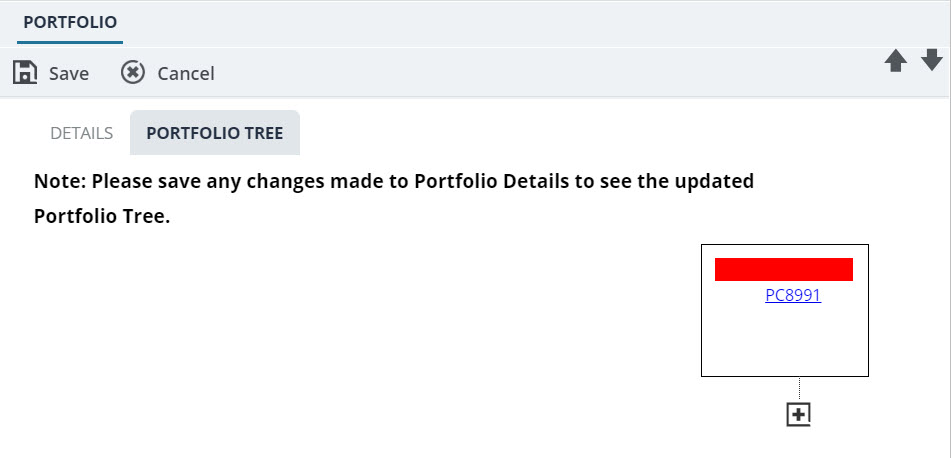

Viewing the Portfolio Tree
ThePortfolio Treeillustrates the hierarchy and placement of projects, sub portfolios, and portfolios in the enterprise. ThePortfolio Treeprovides a visualization of the created portfolio with its contents.
The visualization expands on sub-portfolios till the projects contained within them are displayed. Information illustrated in a portfolio tree are color-coded for easy identification of the portfolio contents. On saving the portfolio details page, the portfolio tree is updated.
The following information is available in the portfolio tree:
| Portfolio Component | Color Code | Description |
|---|---|---|
| Portfolio | Red | The portfolio code is displayed as a link. Also, the name of the portfolio manager is displayed. |
| Project | Green | Project code is displayed as a link. |
| Orange | Program | Program title is displayed as a link. |
-
Click the PORTFOLIO TREE tab.
The hierarchy of portfolios, sub-portfolios, programs, and projects in the enterprise is displayed.
Figure 1. Portfolio Tree Expanded View 
-
Optionally, you can expand
 or collapse a part of the portfolio hierarchy.
or collapse a part of the portfolio hierarchy.
Figure 2. Portfolio Tree Collapsed View 